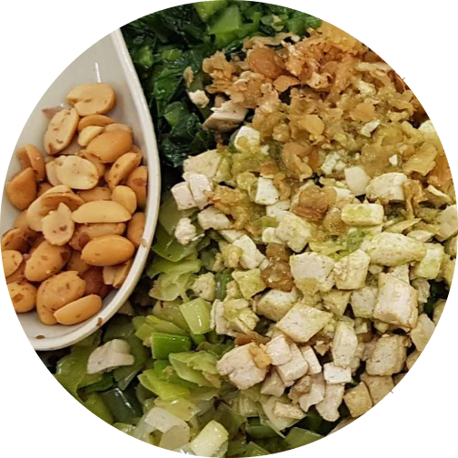
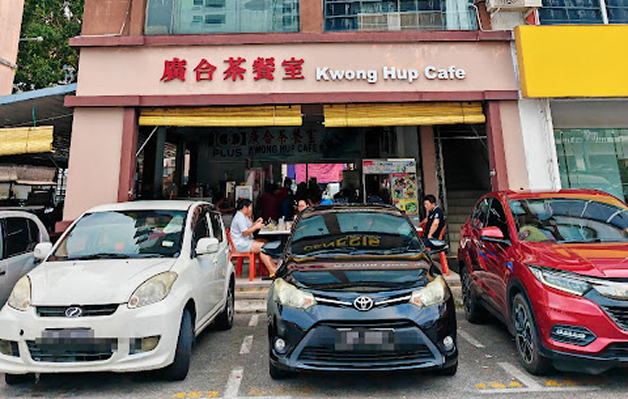
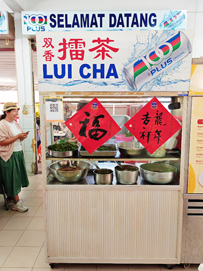
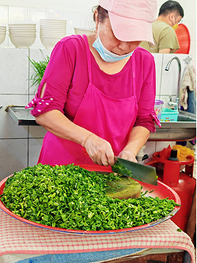

Lei Cha, or Thunder Tea Rice, is a traditional Hakka dish known for its health benefits. It consists of rice topped with vegetables, nuts, and tofu, served with a unique green tea-based herbal broth.
Packed with nutrients and bold flavors, Lei Cha is a wholesome meal that reflects the Hakka community’s heritage and love for nourishing food.

Kwong Hup Cafe is the typical Malaysian corner coffee shop where locals go for their daily meals and coffee.
They have various food stalls, all traditional staples like porridge, noodles (kolo mee), laksa, lei cha, spring rolls, fried kway teow, kueh kueh, etc. Nothing fanciful but all are nice.
Stall holder was chopping up the fresh vegetables for the lei cha. It's a dish made up of different vegetables with rice, peanut and tofu, etc.
The vegetables were so fresh, the stallholder was stripping the leaves from the stem.
Over the boiled white rice (option of brown rice as well), a thick blanket of nuts, preserved vegetables, stir fried vegetables, long beans, diced tofu, etc.


One of outlet that I will always go back for Lui Cha. This is 2nd outlet that I visit for Lui Cha.
Excellent Lei Cha. Lovely range of flavours in each mouthful.
My new favorite Lei Cha in town. Super value for money. Highly recommended.
T The authentic Lui Cha is here as well. Best Lui Cha ever!!!
I really like eating it, Lei Cha is very delicious
Best lei cha in Kuching, and possibly Malaysia? Don’t remember having a better one than this. Menu is basic - small or large, and bitter or less bitter.
Discover more delicious Sarawak Chinese dishes and their rich history!


SarawakChineseFood © 2025 | All Rights Reserved